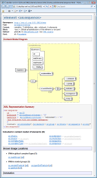
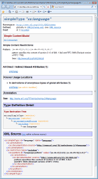
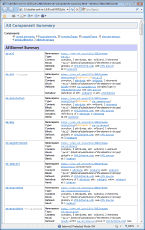
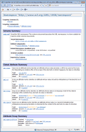
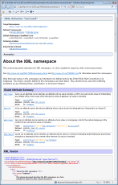
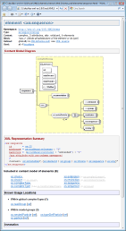
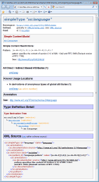
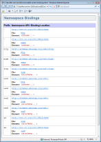

|  |  |
 |
In framed HTML documentation, each of those blocks becomes a separate HTML file (or page), which is displayed in the Detail Frame.
In single file documentation (HTML or RTF), the blocks become separate sections that follow one after another. In RTF each of those sections also has its own page header/footer.
There are following types of main documentation blocks:
Generated By Template:
The Overview Summary block is generated by overview-summary.tpl template.
Controlled By Parameters:
The Overview Summary block may include the following sections:
| Section | Description | Controlled By Parameters |
|---|---|---|
| Namespace Summary | This section enumerates all documented namespaces (i.e. those targeted by at least one of the documented XML schemas) along with brief information about each namespace. | Details | Overview Summary | Namespace Summary |
| Schema Summary | This section enumerates all documented XML schemas along with a few details about each of them. | Details | Overview Summary | Schema Summary |

Generated By Template:
The All Component Summary block is generated by all-components-summary.tpl template.
Controlled By Parameters:
The All Component Summary block may include the following sections:
| Section | Description | Generated By Template | Controlled By Parameters |
|---|---|---|---|
| Element Summary | The summary of all global element components and some of the local element components. | Details | All Component Summary | Elements | |
| Complex Type Summary | The summary of all global complexType components. | Details | All Component Summary | Complex Types | |
| Complex Type Summary | The summary of all global complexType components. | complexTypeSummary.tpl | Details | All Component Summary | Complex Types |
| Simple Type Summary | The summary of all global simpleType components. | simpleTypeSummary.tpl | Details | All Component Summary | Simple Types |
| Element Group Summary | The summary of all global element group components. | groupSummary.tpl | Details | All Component Summary | Element Groups |
| Global Attribute Summary | The summary of all global attribute components. | attributeSummary.tpl | Details | All Component Summary | Global Attributes |
| Attribute Group Summary | The summary of all global attribute group components. | attributeGroupSummary.tpl | Details | All Component Summary | Attribute Groups |

Generated By Template:
The Namespace Overview block/page is generated by namespace-overview.tpl template.
Controlled By Parameters:
See Also:
How everything is documented | Namespaces
The Namespace Overview block may include the following sections:
| Section | Description | Generated By Template / Template Section | Controlled By Parameters |
|---|---|---|---|
| Namespace Profile | The brief information about the namespace. This includes the list of the XML schemas targeting this namespace, the number of components by types, etc. | namespaceProfile.tpl | Details | Namespace Overview | Namespace Profile |
| Schema Summary | This section enumerates all documented XML schemas targeting this namespace along with a few details about each schema. | namespace-overview.tpl | "schema summary" | Details | Namespace Overview | Schema Summary |
| Component Summaries | The summary tables of all global components and local elements that belong to the given namespace (that is defined in all XML schemas which target this namespace). | namespace-overview.tpl | "COMPONENT SUMMARY" | Details | Namespace Overview | Component Summaries |

Generated By Template:
The Schema Overview block is generated by schema-overview.tpl template.
Controlled By Parameters:
See Also:
DocFlex/XML | XSDDoc | What XML Schemas you can document
The Schema Overview block may include the following sections:
| Section | Description | Generated By Template / Template Section | Controlled By Parameters |
|---|---|---|---|
| Schema Profile | The general summary information about the schema. | schemaProfile.tpl | Details | Schema Overview | Schema Profile |
| Annotation |
This section displays the full
annotation
text obtained from all <xs:documentation> elements found by the following path:
<xs:documentation> elements produce separate sections of the annotation text.
|
annotation.tpl | Details | Schema Overview | Annotation |
| Component Summaries | The summary tables of all global components and local elements defined in the given XML schema. | schema-overview.tpl | "COMPONENT SUMMARY" | Details | Schema Overview | Component Summaries |
| XML Source | Full XML source of the schema. | schema-overview.tpl | "XML SOURCE" | Details | Schema Overview | XML Source |
The “Component Documentation” is actually a generic name for different types of main documentation blocks generated for particular XSD component types. However, all such blocks are made of the same sections and their content is controlled by the same parameter group: Details | Component Documentation.
The following table shows all types of Component Documentation blocks that can be generated for particular types of components, the subtemplates generating them and the template parameters to control if such documentation should be generated.
| Component Type | Documentation Block | Generated By Template | Controlled By Parameters |
|---|---|---|---|
|
Global / Local Elements |
Element Documentation |
element.tpl | Generate Details | Elements |
|
Complex Types |
Complex Type Documentation |
complexType.tpl | Generate Details | Complex Types |
|
Simple Types |
Simple Type Documentation |
simpleType.tpl | Generate Details | Simple Types |
|
Element Groups |
Element Group Documentation |
group.tpl | Generate Details | Element Groups |
|
Global Attributes |
Attribute Documentation |
attribute.tpl | Generate Details | Global Attributes |
|
Attribute Group |
Attribute Group Documentation |
attributeGroup.tpl | Generate Details | Attribute Groups |
The following screenshots show samples of Element Documentation, Element Group Documentation and Simple Type Documentation, where all those sections are employed (click to view the HTML):


The Component Documentation is built of the following sections:
| Section | Description |
|---|---|
| Component Profile |
The summary information about the component
(such as which namespace it belongs to, where it is declared, type and content, etc.)
Generated For: All components Generated By Template: (depending on the component type) elementProfile.tpl, typeProfile.tpl, groupProfile.tpl, attributeProfile.tpl, attributeGroupProfile.tpl Controlled By Parameter Group: Details | Component Documentation | Component Profile |
| Content Model Diagram |
Shows a graphic diagram representation of the component content model.
Currently, the content model diagrams can be generated only by an extension of DocFlex/XML that employs the functionality provided by some other software (for instance, the integration with Altova XMLSpy; see "Integrations | XMLSpy" parameter group). Generated For:
Generated By Template: diagram.tpl Controlled By Parameter Group: Details | Component Documentation | Content Model Diagram See Also: How everything is documented | Complex Content | Content Model | Content Model Diagram |
| XML Representation Summary |
Shows a schematic text representation of all possible XML constructions
this component describes as well as how those constructions may look in an XML file.
Generated For: All components Generated By Template: xmlRep.tpl Controlled By Parameter Group: Details | Component Documentation | XML Representation Summary See Also: How everything is documented | Complex Content | Content Model | XML Representation Summary |
| Simple Content Detail |
Describes the simple content defined by (or associated with) this component.
Under the term "simple content", we mean any data that comply with one of the XSD basic datatypes
(e.g. Generated For:
Generated By Template Section: (depending on the component type)
Controlled By Parameter Group: Details | Component Documentation | Simple Content Detail See Also: How everything is documented | Simple Content |
| Lists of Content Elements |
This list shows all elements declared in the Element Content Model of the given component.
These are the same elements as shown in the Complex Content Model of the component's
XML Representation Summary.
However, unlike in the model representation, the elements in this list are ordered alphabetically,
never repeat and hyper-linked directly to the corresponding Element Documentations.
Generated For:
Generated By Template: contentElementList.tpl Controlled By Parameter: Details | Component Documentation | Lists of Related Components | Content Elements See Also: How everything is documented | Complex Content |
| Lists of Containing Elements |
This list is generated only for Element Components,
where it appears under the heading "Included in content model of elements".
The list shows all elements whose content models explicitly include the given element.
(Here, "explicitly" means that element wildcards are not taken into account.)
Generated For: Global / Local Elements Generated By Template Section: element.tpl | "Lists of related elements" | "List of Containing Elements" Controlled By Parameter: Details | Component Documentation | Lists of Related Components | Containing Elements See Also: How everything is documented | Global Elements, Local Elements |
| Lists of Substitutable Elements |
The list of elements this element may substitute for
(that is, the given element may be used anywhere instead of the elements in the list).
This list will appear under the heading "May substitute for elements". Generated For: Global Elements Generated By Template Section: element.tpl | "Lists of related elements" | "List of elements this element may substitute for" Controlled By Parameter: Details | Component Documentation | Lists of Related Components | Substitutable Elements See Also: How everything is documented | Global Elements | Substitution Groups |
| Lists of Substituting Elements |
The list of elements that may substitute for the given element.
(These are the members of the substitution group headed by the given element.)
The list will appear under the heading "May be substituted with elements". Generated For: Global Elements Generated By Template Section: element.tpl | "Lists of related elements" | "List of elements this element may be substituted with" Controlled By Parameter: Details | Component Documentation | Lists of Related Components | Substituting Elements See Also: How everything is documented | Global Elements | Substitution Groups |
| Lists of Possible Children By Substitutions |
The list of all known elements that may be included in the given element by substitutions.
In particular, the list shows all members of the substitution groups whose head elements are declared in the content model of the given element component. The list will appear under the heading "May contain elements by substitutions". Generated For: Global / Local Elements Generated By Template Section: element.tpl | "Lists of related elements" | "List of possible children by substitutions" Controlled By Parameter: Details | Component Documentation | Lists of Related Components | Children By Substitutions See Also: How everything is documented | Global Elements | Substitution Groups |
| Lists of Possible Parents By Substitutions |
The list of all known elements that may include the given element by substitutions.
In particular, the list shows all elements whose content models include the head element of a substitution group which the given element is member of. The list will appear under the heading "May be included in elements by substitutions". Generated For: Global Elements Generated By Template Section: element.tpl | "Lists of related elements" | "List of possible parents by substitutions" Controlled By Parameter: Details | Component Documentation | Lists of Related Components | Parents By Substitutions See Also: How everything is documented | Global Elements | Substitution Groups |
| List of Direct Subtypes |
The list of all known Simple/Complex Type components that are directly derived from the given Type component.
Note: A type is said to be directly derived from the given type, when its definition contains an explicit reference to the given type. Generated For:
Generated By Template Section: typeRelatedCompLists.tpl | "Known Direct Subtypes" Controlled By Parameter: Details | Component Documentation | Lists of Related Components | Direct Subtypes See Also: How everything is documented | Types |
| List of Indirect Subtypes |
The list of all known Simple/Complex Type components that are indirectly derived from the given Type component.
Note: A type is said to be indirectly derived from the given type, when its definition contains no explicit references to the given type but a reference to a certain third type that is directly or indirectly derived from the given type. Generated For:
Generated By Template Section: typeRelatedCompLists.tpl | "Known Direct Subtypes" Controlled By Parameter: Details | Component Documentation | Lists of Related Components | Indirect Subtypes See Also: How everything is documented | Types |
| List of All Based Elements |
This list is generated for each Simple/Complex Type component.
It shows all elements whose type is either the given type itself or
directly/indirectly derived from the given type.
Generated For:
Generated By Template Section: typeRelatedCompLists.tpl | "All direct/indirect based elements" Controlled By Parameter: Details | Component Documentation | Lists of Related Components | All Based Elements See Also: How everything is documented | Types, Global Elements, Local Elements |
| List of All Based Attributes |
This list is generated for each Simple Type component.
It shows all attributes (defined both globally and locally)
whose type is either the given type itself or directly/indirectly derived from the given type.
Generated For: Simple Types Generated By Template Section: typeRelatedCompLists.tpl | "All direct/indirect based attributes" Controlled By Parameter: Details | Component Documentation | Lists of Related Components | All Based Attributes See Also: How everything is documented | Types, Attributes |
| Usage / Definition Locations |
For global components, this section (titled "Known Usage Locations")
shows where and how the given component is used throughout all XML schemas included in the documentation.
For local elements, any usage locations are actually where the element is defined. So, the section is titled "Definition Locations". For more details, see How everything is documented | Local Elements. Generated For: All components Generated By Template / Template Section: (depending on the component type)
Controlled By Parameter Group: Details | Component Documentation | Usage / Definition Locations |
| Annotation |
This section displays the full
annotation
specified for the given component.
The annotation text is obtained from the
where 'xs:component' is the particular XSD element
which defines the component (e.g. xs:complexType).
Multiple <xs:documentation> elements produce separate sections of the annotation text.
Generated For: All components Generated By Template: annotation.tpl Controlled By Parameter Group: Details | Component Documentation | Annotation See Also: How everything is documented | Annotations |
| Type Definition Detail |
This section shows the details about the definition of the type associated with
(or represented by) the given component. It may include:
Generated For:
Generated By Template Section: (depending on the component type)
Controlled By Parameter Group: Details | Component Documentation | Type Definition Detail See Also: How everything is documented | Types | Type Definition Detail |
| XML source |
The reproduced fragment of the XML schema source that defined the given component.
Generated For: All components Generated By Template: nodeSource.tpl Controlled By Parameter Group: Details | Component Documentation | XML Source See Also: How everything is documented | XML Source |
| Attribute Detail |
This section documents the attribute declarations
(both specified within the component itself and inherited from its ancestors)
that define the attribute model represented by the given component.
This may include:
Generated For:
Generated By Template: attributes.tpl Controlled By Parameter Group: Details | Component Documentation | Attribute Detail See Also: How everything is documented | Complex Content, Attributes |
| Content Element Detail |
This section documents the element declarations
(both specified within the component itself and inherited from its ancestors)
that define the element content model represented by the given component.
This may include:
Generated For:
Generated By Template: contentElements.tpl Controlled By Parameter Group: Details | Component Documentation | Content Element Detail See Also: How everything is documented | Complex Content |
Here is how it looks in both HTML and RTF (click to see the real HTML or enlarge):

Generated By Template:
The XML Namespace Bindings block is generated by xmlns-bindings.tpl template.
Controlled By Parameter:
Whether to generate it is controlled by the template parameter: Generate Details | XML Namespace Bindings.
See Also:
How everything is documented | Namespaces
Framed documentation consists of a number of ordinary HTML files (documents) associated with a special structure
called frameset, which itself is defined in the documentation root file
(normally 'index.html').
The frameset divides the browser window into several parts (sub-windows)
called frames. Each frame displays a separate HTML document. Clicking on a hyperlink in one frame
may result in loading a different document into this or another frame.
All HTML documents are typically subdivided into those containing certain details
and those that serve mainly as indexes and reference lists, so that
each document can be loaded only in the specific frame associated with its role.
| Frame | Usage |
|---|---|
| Overview Frame |
This is the primary navigation frame, which provides:
This frame is loaded only once per a start to display the same document generated by overview-frame.tpl template.Controlled By Parameter: The generation of the Overview Frame is controlled by the “Navigation | Overview Frame” parameter. |
| List Frame |
This frame is used to display one of the second-level navigation pages
associated with a particular selection in the Overview Frame.
This includes:
Using “Navigation | List Frame” parameter you can specify which of those navigation lists will be initially loaded in this frame. |
| Detail Frame |
This frame is used to display the actual documentation content, which may be one of the
main blocks (pages):
Using “Navigation | Detail Frame” parameter you can specify which of those pages will be initially loaded in this frame. |
| List/Page | Description |
|---|---|
| All Components |
This page shows all global components and local elements defined throughout
all XML schemas being documented.
On the top, there is “All Components” header, which is hyperlinked to the All Component Summary page. The component list is broken into separate groups according to component types (e.g. elements, complexTypes etc). Using the corresponding “Navigation | List Frame | All Components | {Component Types}” parameters, you can specify the components of which types should be included in the list. The sorting order of components within a type group is controlled by the “Navigation | List Frame | All Components | Sorting” parameter. Each component list item is hyperlinked to the corresponding Component Documentation page with the detailed information about the component. Alternatively, using the “Navigation | List Frame | All Components | Link To” parameter, you can redirect the component hyperlinks to the definitions of those components within the reproduced full XML schema source, which is included in the Schema Overview. That effectively will allow you to use the component list as an index to your XML schema source. Generated By Template: all-components-frame.tplControlled By Parameter Group: Navigation | List Frame | All Components |
| Namespace |
This page is generated for every documented namespace. It shows all XML schemas that target the given namespace
and all global components and local elements that belong to it.
The namespace URI displayed on the top of the page is hyperlinked to the corresponding Namespace Overview generated for that namespace. Otherwise, everything is organized the same as in the case of All Components page and can be similarly customized. Generated By Template: namespace-frame.tplControlled By Parameter Group: Navigation | List Frame | Namespace |
| Schema |
This page is generated for every XML schema being documented and may list
all global components and local elements defined in it.
The schema file name is displayed on the top of the page and hyperlinked to the corresponding Schema Overview generated for that XML schema. Otherwise, everything is organized the same as in the case of All Components page and can be similarly customized. Generated By Template: schema-frame.tplControlled By Parameter Group: Navigation | List Frame | Schema |